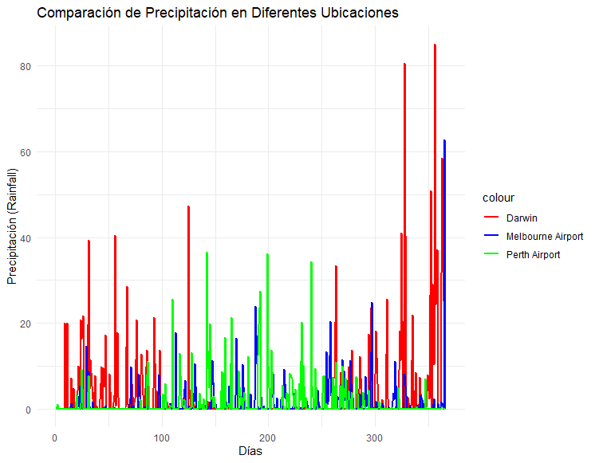

4 Predicción de lluvia en Australia
5 Resumen ejecutivo.
Nombre del conjunto de datos: weatherAUS
Origen:
Origen de los datos: Commonwealth of Australia 2010, Bureau of Meteorology Los datos fueron extraídos de mediciones realizadas por múltiples estaciones meteorológicas australianas. Estos datos fueron recopilados y puestos a disposición del público por parte de la agencia nacional de meteorología, clima y agua de Australia a través de los siguientes enlaces:
Origen del conjunto de datos: Rain in Australia | Kaggle https://www.kaggle.com/datasets/jsphyg/weather-dataset-rattle-package
Fecha de descarga: Octubre de 2023
Usos anteriores del conjunto de datos:
Uso original: Joe Young, autor de la publicación original en kaggle.com no aduce a un uso previo del conjunto de datos. Se indica que fue recopilado con el propósito de entrenar modelos de clasificación que determinen si lloverá el próximo día mediante observaciones tomadas a lo largo de 10 años en múltiples ubicaciones australianas.
Otros usos: Dado que el conjunto de datos está disponible en Kaggle.com, existe una notable cantidad de trabajos que lo utilizan. A continuación se citan algunos de ellos.
- A. Sarasa-Cabezuelo, Prediction of Rainfall in Australia Using Machine Learning. Information 2022, 13, 163. https://doi.org/10.3390/info13040163
- T.J. Kyner, Rain in Australia - Next-Day Prediction Model. GitHub repository (2021). https://github.com/tjkyner/australian-rain-prediction
Número de instancias: 145460
Información de los atributos: En el conjunto de datos aparece la fecha de las mediciones, las estaciones a considerar, dadas por el atributo Location, y otros 20 atributos que se pueden utilizar para predecir el valor del atributo RainTomorrow.
Nombre Tipo de dato Unidad de medida Descripción Date fecha fecha de la medicion Location nominal ubicación MinTemp continuo grado C temperatura mínima MaxTemp continuo grado C temperatura máxima Rainfall continuo mm precipitaciones Evaporation continuo mm tanque clase A Sunshine continuo hora tiempo del día soleado WindGustDir nominal 16 puntos cardinales dirección máx v viento WindGustSpeed discreto km/h max. velocidad viento WindDir9am nominal 16 puntos cardinales dirección viento 09:00 WindDir3pm nominal 16 puntos cardinales dirección viento 15:00 WindSpeed9am discreto km/h velocidad viento 09:00 WindSpeed3pm discreto km/h velocidad viento 15:00 Humidity9am discreto tanto por ciento humedad relativa 09:00 Humidity3pm discreto tanto por ciento humedad relativa 15:00 Pressure9am continuo hPa presión 09:00 Pressure3pm continuo hPa presión 15:00 Cloud9am discreto octante fracción cielo nublado Cloud3pm discreto octante fracción cielo nublado Temp9am continuo grado C temperatura 09:00 Temp3pm continuo grado C temperatura 15:00 RainToday nominal ¿hubo precipitaciones? RainTomorrow nominal ¿llovió al día siguiente?
En particular, los atributos RainToday y RainTomorrow se comportan de manera binaria (Yes/No) considerando que Yes aparece solo si de 9am a 9pm se registró más de 1 mm de precipitación.
Cantidad de atributos por tipo:
- 7 atributos categóricos, de los cuales 1 es de tipo fecha y 6 son nominales;
- 16 atributos numéricos, de los cuales 9 son continuos y 7 discretos.
- 23 atributos en total.Distribución de clases:
Clases Recuento Porcentaje(%) No 110316 75.84 Yes 31877 21.92 NA 3261 2.24 Numero de clases: 3
6 Introducción
La capacidad de predecir el tiempo ha sido, desde tiempos antiguos, una de las tareas más apasionantes y vitales en el ámbito de la ciencia y la tecnología. A lo largo de la historia, la humanidad ha observado los cambios en el cielo y las condiciones atmosféricas para adaptarse a su entorno y tomar decisiones fundamentadas, ya sea en la agricultura, la navegación o la protección ante eventos climáticos extremos. A medida que avanzan los avances científicos y tecnológicos, hemos progresado desde la dependencia de observaciones empíricas hacia la predicción del tiempo basada en datos, modelos matemáticos y observaciones científicas precisas.
La predicción del tiempo desempeña un rol crítico en la vida cotidiana. Desde la planificación de actividades al aire libre hasta la toma de decisiones cruciales en el mundo empresarial, la información precisa sobre las condiciones climáticas se convierte en un activo esencial. Además, en un mundo en constante evolución marcado por el calentamiento global y el cambio climático, la predicción del tiempo juega un papel vital en la comprensión y mitigación de los efectos de eventos climáticos extremos.
Esta introducción destaca la importancia de la predicción del tiempo en nuestra vida diaria y su relevancia a nivel global. En la actualidad, a medida que nos adentramos en la era de la ciencia de datos y la innovación tecnológica, las modernas técnicas de predicción meteorológica se han vuelto más precisas y avanzadas. En este contexto, exploraremos varios modelos para predecir el tiempo usando el aprendizaje automático.
7 Descripción del conjunto de datos
7.1 Análisis general del conjunto de datos.
El conjunto de datos contiene observaciones de 49 estaciones repartidas por toda Australia. A continuación mostraremos en una imagen sus ubicaciones. Resulta lógico pensar que dependiendo del clima de la región la probabilidad de llover será mayor o menor, por tanto también representaremos los diferentes climas de Australia.
7.1.1 Figuras
Las siguientes figuras muestran información relevante sobre las estaciones y climas en Australia.

En la figura 1 podemos observar como el mayor número de estaciones se encuentra en la zona sureste del mapa. Esto se debe a que es la zona más poblada de Australia, donde se encuentran las grandes ciudades como Sydney o Melbourne. Una pregunta lógica tras ver las ubicaciones de la estaciones es pensar en si será mejor tratar las estaciones aisladas como independientes de las demás y estudiarlas a parte. Debido al gran tamaño de Australia podemos pensar en si realmente influye el tiempo al este con el tiempo al oeste. En la Sección Análisis de las precipitaciones a lo largo del año estudiaremos la lluvia en distintas estaciones para reforzar este pensamiento. A continuación analizaremos la figura 3 que representa el porcentaje de missing values de cada variable.
Las variables con mayor porcentaje de NA son Sunshine, Evaporation, Cloud9am y Cloud3pm. Esto se puede deber a que estas medidas solo se hayan tomado ciertos años o sean difíciles de medir como Evaporation. Las siguientes variables con mayor porcentaje son las relativas a la presión y la humedad pero en menor medida que las anteriores. Podemos pensar que se debe a una falta de herramientas o a problemas técnicos. Las demás variables tienen niveles relativamente bajos de NAs. Algo importante a destacar es que las variables Date y Location no tienen datos faltantes en todo el conjunto, esto nos ahorrará problemas más adelante.
7.2 Análisis de las variables categóricas
Las tablas que se presentan a continuación representan el recuento total de cada valor de las variables WindGustDir, WindDir9am, WindDir3pm, RainToday y RainTomorrow. Usando las tablas podemos ver la frecuencia de cada uno de los valores y, por ende, saber la que aparece con mayor frecuencia. También aparece el recuento de los NAs de cada variable.
7.2.1 Tabla 1. WindGustDir
| WindGustDir | count | percentage |
|---|---|---|
| E | 9181 | 6.3117 % |
| ENE | 8104 | 5.5713 % |
| ESE | 7372 | 5.0681 % |
| N | 9313 | 6.4024 % |
| NA | 10326 | 7.0989 % |
| NE | 7133 | 4.9038 % |
| NNE | 6548 | 4.5016 % |
| NNW | 6620 | 4.5511 % |
| NW | 8122 | 5.5837 % |
| S | 9168 | 6.3028 % |
| SE | 9418 | 6.4746 % |
| SSE | 9216 | 6.3358 % |
| SSW | 8736 | 6.0058 % |
| SW | 8967 | 6.1646 % |
| W | 9915 | 6.8163 % |
| WNW | 8252 | 5.6730 % |
| WSW | 9069 | 6.2347 % |
7.2.2 Tabla 2. WindDir9am
| WindDir9am | count | percentage |
|---|---|---|
| E | 9176 | 6.3083 % |
| ENE | 7836 | 5.3870 % |
| ESE | 7630 | 5.2454 % |
| N | 11758 | 8.0833 % |
| NA | 10566 | 7.2639 % |
| NE | 7671 | 5.2736 % |
| NNE | 8129 | 5.5885 % |
| NNW | 7980 | 5.4860 % |
| NW | 8749 | 6.0147 % |
| S | 8659 | 5.9528 % |
| SE | 9287 | 6.3846 % |
| SSE | 9112 | 6.2643 % |
| SSW | 7587 | 5.2159 % |
| SW | 8423 | 5.7906 % |
| W | 8459 | 5.8153 % |
| WNW | 7414 | 5.0969 % |
| WSW | 7024 | 4.8288 % |
7.2.3 Tabla 3. WindDir3pm
| WindDir3pm | count | percentage |
|---|---|---|
| E | 8472 | 5.8243 % |
| ENE | 7857 | 5.4015 % |
| ESE | 8505 | 5.8470 % |
| N | 8890 | 6.1116 % |
| NA | 4228 | 2.9066 % |
| NE | 8263 | 5.6806 % |
| NNE | 6590 | 4.5305 % |
| NNW | 7870 | 5.4104 % |
| NW | 8610 | 5.9192 % |
| S | 9926 | 6.8239 % |
| SE | 10838 | 7.4508 % |
| SSE | 9399 | 6.4616 % |
| SSW | 8156 | 5.6070 % |
| SW | 9354 | 6.4306 % |
| W | 10110 | 6.9504 % |
| WNW | 8874 | 6.1006 % |
| WSW | 9518 | 6.5434 % |
7.2.4 Tabla 4. RainToday
| RainToday | count | percentage |
|---|---|---|
| NA | 3261 | 2.2419 % |
| No | 110319 | 75.8415 % |
| Yes | 31880 | 21.9167 % |
7.2.5 Tabla 5. RainTomorrow
| RainTomorrow | count | percentage |
|---|---|---|
| NA | 3267 | 2.2460 % |
| No | 110316 | 75.8394 % |
| Yes | 31877 | 21.9146 % |
En las Tablas 1, 2 y 3 se presentan las frecuencias asociadas a diversas características del viento. La Tabla 1 refleja la dirección del viento más predominante, mientras que la Tabla 2 se enfoca en la dirección del viento a las 9 de la mañana, y la Tabla 3 analiza la dirección del viento a las 3 de la tarde. Es importante tener en cuenta que estas variables también exhiben una dependencia significativa de la estación climática. Por lo tanto, nuestras observaciones se expresan en un contexto general, ya que las direcciones predominantes del viento pueden variar en estaciones climáticas aisladas en comparación con aquellas observadas en diferentes ubicaciones.
Las Tablas 4 y 5 nos indican lo desbalanceada que está la variable respuesta de este problema de clasificación. Es evidente que podríamos realizar predicciones considerando que no lloverá al día siguiente, logrando una tasa de acierto superior al 75 %. Es decir, acertaríamos en 3 de cada 4 ocasiones. Nuestro principal objetivo radica en lograr una clasificación precisa de las clases, y no tanto en minimizar el error general aparente.
La siguiente tabla nos indica los valores distintos de las variables categóricas que no habíamos introducido en la entrega 1. Vemos que tenemos 49 estaciones de lluvia, 3436 fechas distintas, las direcciones de viento están divididas en 16 secciones, la variable que nos indica si ha llovido hoy o no y por último la clase que indica si lloverá mañana o no.
7.2.6 Tabla 6. Valores distintos para variables categóricas
| Variable | Valores distintos |
|---|---|
| Location | 49 |
| Date | 3436 |
| WindGustDir | 16 |
| WindDir9am | 16 |
| WindDir3pm | 16 |
| RainToday | 2 |
| RainTomorrow | 2 |
Si dividimos 3436 entre 365 obtenemos la cantidad de años que tenemos recogidos, casi 9 años y medio. También si multiplicamos 49 por 3436 obtenemos un valor mayor al del total de las instacias del conjunto de datos, esto nos dice que hay fechas en las que alguna estación no recogió valores.
Las variables con respecto al viento vemos que tienen 16 valores distintos, esto quiere decir que el círculo está dividido en 16 y aparecen valores como NNW(nornoroeste)
7.2.7 Correlaciones entre las variables categóricas
Con el objetivo de estudiar la relación entre las variables categóricas hemos realizado varias pruebas \(\chi^2\) que expondremos a continuación.
RainToday-RainTomorrow: Hemos enfrentado las variables que nos indican si ha llovido y hemos obtenido un p-valor \(<\) 2.2e-16. Lo que sugiere que hay una fuerte asociación entre las variables. Es normal que ocurra esto, en general no llueve de manera aislada.
Date-RainTomorrow: Hemos enfrentado la fecha y la variable de respuesta y hemos obtenido un p-valor \(<\) 2.2e-16. Esta fuerte asociación entre las variables se debe a que habrá días y meses en los que será más o menos frecuente la lluvia.
RainToday-Location: Hemos realizado la prueba usando las variables RainToday Location y hemos obtenido un p-valor \(<\) 2.2e-16. Esta relación se debe a que dependiendo de la estación y el clima en concreto de la misma lloverá con mayor o con menor frecuencia.
WindGustDir-RainTomorrow: Hemos enfrentado las variables y hemos obtenido un p-valor \(<\) 2.2e-16. Es un hecho conocido que el viento influye en la climatología, tanto su precedencia como en este caso su fuerza, por eso obtenemos esta fuerte relación.
WindDir9am-WindDir3pm: Hemos enfrentado las variables y hemos obtenido un p-valor \(<\) 2.2e-16. Evidentemente el test nos indica que la dirección del viento a las 9 de la mañana está fuertemente relacionada con la dirección unas pocas horas después.
WindDir9am-WindGustDir: Hemos enfrentado las variables y hemos obtenido un p-valor \(<\) 2.2e-16. El objetivo de esta prueba era confirmar lo que ya se conoce, la fuerte relación entre el viento más fuerte y el viento a las 9 de la mañana.
RainTomorrow-WindGustDir: Hemos enfrentado la variable respuesta y la variable “WindGustDir” y hemos obtenido un p-valor \(<\) 2.2e-16. Esta prueba nos indica que están fuertemente correladas. Parece lógico pensar que dependiendo de lo fuerte que el viento mueva las nubes lloverá o no.
7.3 Análisis de las variables numéricas
La primera tabla contiene el número de valores distintos, la media, la desviación típica, el mínimo y el máximo, valores clave en el análisis de datos.
La siguiente nos indica la moda, el porcentaje de NA de cada una de las variables numéricas y el rango de validez de las mismas.
7.3.1 Tabla 7. Estadísticas para diferentes campos
| Campo | Valores Distintos | Media | Desviación Típica | Mínimo | Máximo |
|---|---|---|---|---|---|
| WindGustSpeed | 67 | 40.04 | 13.61 | 6 | 135 |
| WindSpeed9am | 43 | 14.04 | 8.92 | 0 | 130 |
| WindSpeed3pm | 44 | 18.66 | 8.81 | 0 | 87 |
| Humidity9am | 101 | 68.88 | 19.03 | 0 | 100 |
| Humidity3pm | 101 | 51.54 | 20.80 | 0 | 100 |
| Cloud9am | 10 | 4.45 | 2.89 | 0 | 9 |
| Cloud3pm | 10 | 4.51 | 2.72 | 0 | 9 |
| MinTemp | 389 | 12.19 | 6.40 | -8.5 | 33.9 |
| MaxTemp | 505 | 23.22 | 7.12 | -4.8 | 48.1 |
| Rainfall | 681 | 2.36 | 8.48 | 0.0 | 371.0 |
| Evaporation | 358 | 5.47 | 4.19 | 0.0 | 145.0 |
| Sunshine | 145 | 7.61 | 3.79 | 0.0 | 14.5 |
| Pressure9am | 546 | 1017.65 | 7.11 | 980.5 | 1041.0 |
| Pressure3pm | 549 | 1015.26 | 7.04 | 977.1 | 1039.6 |
| Temp9am | 441 | 16.99 | 6.49 | -7.2 | 40.2 |
| Temp3pm | 502 | 21.68 | 6.94 | -5.4 | 46.7 |
7.3.2 Tabla 8. Moda, Porcentaje de NA y Rango de Validez
| Campo | Moda | Porcentaje de NA | Rango de Validez |
|---|---|---|---|
| MinTemp | 13 | 1.02 % | [-89.7, 56.7] |
| MaxTemp | 19.6 | 0.87 % | [-89.7, 56.7] |
| Rainfall | 0 | 2.24 % | [0, 1500] |
| Sunshine | 0 | 48.01 % | [0, 20] |
| WindSpeed9am | 13 | 1.21 % | [0, 372] |
| WindSpeed3pm | 17 | 2.10 % | [0, 372] |
| Humidity9am | 68 | 1.82 % | [0, 100] |
| Humidity3pm | 52 | 3.10 % | [0, 100] |
| Pressure9am | 1016.4 | 10.36 % | [920, 1080] |
| Pressure3pm | 1013.5 1014.8 | 10.33 % | [920, 1080] |
| Cloud9am | 7 | 7.65 % | {0, 1, …, 8} |
| Cloud3pm | 7 | 7.80 % | {0, 1, …, 8} |
| Temp9am | 16.6 | 1.21 % | [-89.7, 56.7] |
| Temp3pm | 18.4 | 2.48 % | [-89.7, 56.7] |
En el análisis de los datos, hemos validado el rango de validez para variables como Humidity y Cloud según sus definiciones. En el caso de variables como MinTemp o Pressure9am, hemos considerado como rango de validez los mínimos y máximos globales registrados. Gracias al código de Scala, hemos verificado que ninguna variable está fuera de su rango de validez.
Además, al observar la media y la desviación estándar de algunas variables, podemos considerar que los valores máximos podrían ser outliers. Por ejemplo, en las variables Rainfall y Evaporation, esto podría deberse a eventos extremos como tormentas. Asimismo, la alta variación de temperaturas se explica por la extensión de Australia y la ubicación de las distintas estaciones en diferentes climas.
Al estudiar los histogramas, podemos agrupar las variables según la distribución a la que se aproximan.
Distribución normal
Las variables que siguen una distribución normal, debido a su forma de campana, son las relativas a la temperatura y a la presión: MinTemp, MaxTemp, Temp9am, Temp3pm, Pressure9am y Pressure3pm. También cabe mencionar que la variable Humidity3pm tiene una forma de campana, pero las colas no llegan a 0.
Distribución Weibull
Las variables relativas al viento siguen una distribución Weibull debido a su forma de campana con desplazamiento a la izquierda y cola hacia la derecha: WindGustSpeed, WindSpeed9am y WindSpeed3pm.
Distribución Valle
Las variables relativas a las nubes tienen una forma de valle, lo que indica que es probable que el cielo esté con pocas nubes o mayormente cubierto, pero menos probable que la mitad del cielo esté cubierto. Estas variables son Cloud9am y Cloud3pm.
Distribución concentrada en el 0
Las variables relativas a la lluvia en un día, Rainfall y Evaporation, están concentradas cerca del 0, ya que, como mencionamos antes, llueve aproximadamente 1 de cada 4 días.
Distribución sesgada a la derecha
Las variables Humidity9am y Sunshine están sesgadas a la derecha. La humedad tiene sus valores más altos a primera hora de la mañana, si no tenemos en cuenta si ha llovido o no. Por otro lado, las horas de sol están sesgadas hacia la derecha debido a que tienen una duración estándar.
7.3.3 Correlaciones entre las variables numéricas
A continuación vemos una matriz de correlaciones de las variables numéricas que estamos utilizando (figura 5). Nos fijaremos sobre todo en los valores extremos.

Podemos ver que las variables relacionadas con la temperatura están muy correladas entre sí y, en particular, la temperatura máxima está relacionada con la humedad y la presión. Así como las variables que nos aportan datos del viento. Por otro lado, la variable Sunshine está muy correlada con la cantidad de nubes Cloud9am y Cloud3pm y también con la humedad.
Cabe estudiar la existencia de atributos redundantes a partir de esta tabla. Si dos atributos tienen una correlación similar con el resto de variables, ambos aportarán una información similar. Para llevar a cabo esta comparación basta con observar si las columnas y las filas asociadas al par de atributos de interés son similares.
Tal y como cabría esperar, los atributos que cuantifican la misma magnitud en diferentes momentos del día presentan correlaciones extremadamente similares con el resto de atributos. En particular, Humidity9am y Humidity3pm, aun siendo los dos atributos que menos similitud presentan de los anteriormente mencionados, son grandes candidatos a ser modificados en la etapa de procesamiento del dato. Asimismo, los tres atributos relativos a la velocidad del viento presentan una muy clara redundancia.
Por otro lado, los atributos MinTemp y MaxTemp son bastante similares, pero presentan diferencias notables en sus correlaciones con parte de los demás atributos. Es por ello que hemos considerado que el estudio de su redundancia puede ser más esclarecedor una vez se introduzca el modelo. Esta misma apreciación es también aplicable a la relación de los dos atributos anteriores con Temp9am y Temp3pm.
7.4 Análisis de las precipitaciones a lo largo del año
Se presenta el histograma de la cantidad de registros del conjunto de datos para cada fecha (figura 6).
Hemos optado por realizar un análisis anual de las precipitaciones para determinar, por ejemplo, las probabilidades de precipitación según el mes del año. Aunque se podría afinar este análisis diariamente, se expondrán a continuación los desafíos que presenta esta aproximación en esta etapa del proyecto.
El conjunto de datos abarca el período de 2007 a 2017, específicamente, desde el 1 de noviembre de 2007 hasta el 25 de junio de 2017. Esta franja temporal corresponde a un total de 3.525 días. Sin embargo, al verificar la cantidad de días recogidos en el conjunto de datos, el resultado es de 3.436 días. Es decir, hay 89 días sin información, lo que representa el 2,5% del total.
7.4.1 Cantidad de Registros por Estación Meteorológica
La siguiente tabla muestra la cantidad de registros por estación meteorológica desde 2009 hasta 2017.
7.4.1.1 Tabla 9. Registros por estación
| Location | count | Location | count | Location | count |
|---|---|---|---|---|---|
| Adelaide | 3009 | Melbourne | 3009 | Sydney | 3009 |
| Albany | 3009 | MelbourneAirport | 3009 | SydneyAirport | 3009 |
| Albury | 3009 | Mildura | 3009 | Townsville | 3009 |
| AliceSprings | 3009 | Moree | 3009 | Tuggeranong | 3008 |
| BadgerysCreek | 3009 | MountGambier | 3009 | Uluru | 1578 |
| Ballarat | 3009 | MountGinini | 3009 | WaggaWagga | 3009 |
| Bendigo | 3009 | Newcastle | 3008 | Walpole | 3006 |
| Brisbane | 3009 | Nhil | 1578 | Watsonia | 3009 |
| Cairns | 3009 | NorahHead | 3004 | Williamtown | 3009 |
| Canberra | 3009 | NorfolkIsland | 3009 | Witchcliffe | 3009 |
| Cobar | 3009 | Nuriootpa | 3009 | Wollongong | 3009 |
| CoffsHarbour | 3009 | PearceRAAF | 3009 | Woomera | 3009 |
| Dartmoor | 3009 | Penrith | 3008 | ||
| Darwin | 3009 | Perth | 3009 | ||
| GoldCoast | 3009 | PerthAirport | 3009 | ||
| Hobart | 3009 | Portland | 3009 | ||
| Katherine | 1578 | Richmond | 3009 | ||
| Launceston | 3009 | Sale | 3009 |
En la etapa de tratamiento de los datos, asumimos la periodicidad anual y cierta semejanza entre días y meses cercanos. Aunque los 89 días sin información no están distribuidos homogéneamente en casi 10 años, su ausencia no debería ser relevante tras un correcto tratamiento de los datos.
7.4.2 Análisis de Ausencias y Distribución Temporal
En la figura 6, el histograma representa el número de estaciones diferentes donde se ha realizado una medición en la fecha indicada. Se observa una falta significativa de datos en los años anteriores a 2009 y notables ausencias de datos continuos en 2011, 2012 y 2013.
En el subconjunto de años 2009 a 2017, el número total de días considerados es de 3.097, y se tiene registro de 3.009 de ellos. Aproximadamente el 2,8% de los días no tienen registro de ninguna estación meteorológica. Aunque en este subconjunto se agrupan casi todos los registros faltantes, hay mediciones de al menos 45 estaciones meteorológicas todos los días.
Esto lleva a la conclusión de que sería conveniente considerar solo los datos entre 2009 y 2017 para un análisis anual de las precipitaciones. Se plantea también el tratamiento de los registros ausentes como missing values, al menos en dicho análisis.
7.4.3 Diferencia de Precipitaciones en Distintas Ubicaciones
En la figura 7, se visualiza la diferencia de precipitaciones a lo largo del 2016 en tres ubicaciones distintas: Darwin al norte, Melbourne al sureste y Perth al oeste.

Finalmente, la próxima etapa del proyecto abordará el tratamiento de los datos y proporcionará una gráfica de las precipitaciones medias por mes, así como la determinación de las posibilidades de precipitación a priori.
8 Conclusiones Entrega 1
Tras realizar esta observación del conjunto de datos nos hemos dado cuenta de los problemas que tendremos que afrontar en las siguientes fases.
Tendremos que estudiar el problema de los valores ausentes que aparecen en gran proporción en algunas variables. Una posible solución será eliminar del conjunto de datos o rellenar esos valores de alguna forma. También queda pendiente estudiar los máximos y mínimos para confirmar si son o no outliers una vez que tratemos los datos. Los atributos redundantes analizados también serán objeto de transformación o eliminación en la próxima
A su vez tendremos que profundizar en la climatología de Australia para resolver el inconveniente que generan las estaciones meteorológicas aisladas debido a la gran extensión de la isla. Al incluirlas en un árbol de decisión podríamos estar sobreajustando y tal vez su estudio sea mejor realizarlo de manera independiente.
Por último, a la hora de evaluar nuestros modelos tendremos que tener cuidado con las clases desbalanceadas. Como objetivos nos podemos plantear superar la predicción que tendríamos si predijesemos que nunca va a llover mañana.
9 Limpieza, selección, transformación y creación de un primer modelo
9.1 Consideraciones previas
Siguiendo la metodología CRISP-DM, previamente a la transformación de los datos es necesario comprender en profundidad el problema a tratar. Es por ello que hemos realizado una busqueda bibliográfica con el fin de poder tratar los datos de manera adecuada.
En la Sección 3.4 de Cullen se dan indicaciones sobre la parametrización de un modelo meteorológico generalista. Dichas indicaciones permiten hacerse una idea de los atributos más influyentes en las variaciones climáticas y, en particular, en las precipitaciones.
En primer lugar, la localización es un atributo extremadamente relevante, tanto es así que incluso convendría tener en cuenta las condiciones meteorológicas en estaciones vecinas para poder hacer predicciones precisas. Esto no es posible con un árbol de decisión si no se realizan profundas transformaciones en el dataset, pero sí es posible introducir manualmente una variable con la zona climática, descomponer la ubicación en longitud y latitud o hacer un clustering para crear un nuevo atributo. En esta etapa hemos intentado hacer un clustering, ya que no aumenta la dimensionalidad tanto como la opción de las coordenadas y permite crear grupos más parecidos que la zona climática, pues pese a que dos estaciones tengan un clima semejante, si están separadas 1.000 km el tiempo no va a estar extremadamente correlado día a día. Desgraciadamente no hemos sido capaces de llevarlo a cabo para esta entrega, pero seguramente lo hagamos de cara a la siguiente ya que dispondremos de más tiempo. De hecho, en posteriores modelos es posible que se opte por probar con una aplicación conjunta del clustering y las consideraciones anteriores.
El citado artículo también da cuenta de la relevancia de la temperatura y la humedad en el proceso de formación de nubes. Por el contrario, la cantidad de nubes no parece ser un parámetro especialmente relevante, sino que su composición, el tipo de nube o la evolución de la misma son mucho más determinantes. Desgraciadamente nuestro conjunto no dispone de tales datos, como mucho se puede intuir que los días en los que el cielo está completamente cubierto hay mayor probabilidad de que la nube sea un estrato o un cumulonimbo. En cualquier caso, a tenor de la literatura consultada, no consideramos que sea un atributo que aporte información sustancial sobre las precipitaciones del día siguiente, menos aún teniendo en cuenta la cantidad de datos faltantes que presenta.
En el proceso de formación de nubes de lluvia intervienen con especial relevancia la evaporación y el viento, tal y como se describe en Gregory. En dicha publicación se ahonda en un modelo descriptivo de los procesos de convección responsables de la evolución nubosa. En cuanto al viento cabe decir que es extremadamente importante su relación con la localización, pues los vientos provinientes del mar suelen arrastrar humedad y condiciones favorables para la aparición de precipitaciones. De hecho, en el citado artículo se indica incluso la importancia de las condiciones del mar tales como la temperatura en la superficie o la temperatura del propio agua. Si bien no disponemos de tanta información en nuestro conjunto de datos, sí cabe considerar la importancia de la dirección y velocidad del viento así como los diferentes valores de temperatura.
Tal y como se vió en la etapa anterior, la evaporación está negativamente correlada con la humedad, de hecho sus correlaciones con el resto de variables son opuestas (figura 5). Físicamente está influida por la temperatura y, en menor medida, por la presión pues ambas condicionan la presión de vapor, que determina el punto de evaporación. Esto permite justificar la eliminación de la evaporación en el conjunto de datos desde un punto de vista puramente meteorológico.
Por último, la presión, muy relevante en la previsión meteorológica no tiene por qué ser tan relevante en nuestro caso particular, pues en los modelos meteorológicos como el descrito en Hudson tienen en cuenta su variación y no su valor en un instante concreto. La citada publicación describe, precisamente, el modelo meteorológico utilizado actualmente por la agencia meteorológica de Australia. Tras una consulta del mismo podemos preveer que nuestro modelo no tenga una muy elevada capacidad predictiva ya que la inmensa mayoría de datos considerados son relaciones entre las mediciones de distintas estaciones meteorológicas o la evolución de dichas medidas. Para intentar adecuarse a estas consideraciones, en futuras etapas de este proyecto se valorará la posibilidad de incluir nuevos atributos que contengan la evolución de la presión en los últimos días o la diferencia de temperatura de una estación con respecto a la media de las de su mismo cluster, por ejemplo.
Comprendemos que la naturaleza del método a implementar (árboles de decisión) y las características del dataset pueden provocar que los factores determinantes para la predicción sean diferentes a las tratadas en este epígrafe. En cualquier caso, siguiendo la metodología expuesta en clase, hemos considerado necesario documentarnos e incluir esta información previamente al tratamiento de datos.
9.2 Conjuntos de entrenamiento y prueba
Hemos dividido el dataset de manera aleatoria en dos partes. El conjunto de entrenamiento constituye el 70% de los registros del conjunto de datos mientras que el conjunto de prueba representa el 30%.
Así pues, de ahora en adelante, cada vez que se haga referencia en esta memoria a una modificación del conjunto de datos se entiende que se realiza paralelamente en el conjunto de entrenamiento y en el conjunto de prueba.
9.3 Limpieza de datos
Tal y como se vió en la etapa previa, nuestro conjunto de datos no contiene registros vacíos o inválidos, por tanto, la limpieza se fundamenta en el análisis de los valores de cada atributo.
En la figura 3 se observa cómo la mitad de valores del atributo Sunshine son Na y, en menor medida, Evaporation, Cloud3pm y Cloud9am presentan un número altísimo de missing values. La proporción de valores ausentes es tan elevada que hemos considerado oportuno eliminar las variables pues, como hemos visto, tampoco tienen especial relevancia desde el punto de vista meteorológico.
Tal y como se verá en la próxima sección, las variables categóricas consideradas son WindGustDir, RainToday y RainTomorrow. En cuanto a la primera, sus valores están uniformemente distribuidos, es por ello que no considerábamos oportuno sustituir los valores faltantes por uno de ellos en particular. Dado que la cantidad de Na es baja hemos decidido eliminar los registros.
En total se han eliminado 18.620 instancias en el proceso de limpieza. Es decir \(\mathrm{NTAIE}=18.620\), que en términos relativos se corresponde con el valor 0,128.
9.4 Selección atributos
El uso de un árbol de decisión aumenta la relevancia de este apartado del diseño del modelo. Los árboles de decisión suelen conducir a mejores resultados cuando la dimensionalidad del conjunto de datos es reducida, sobre todo teniendo en cuenta que el árbol tiene profundidad 5. Consecuentemente cobra sentido la documentación realizada sobre meteorología, permitiendo una reducción manual de la dimensionalidad fundamentada, referenciando a estudios científicos sobre el tema.
Como ya se ha indicado, no hemos considerado las variables Sunshine, Evaporation, Cloud9am y Cloud3pm por su gran cantidad de valores ausentes y su poca relevancia desde el punto de vista meteorológico.
En la figura 8 se observa cómo hay una cantidad notable de atributos redundantes, pues no solo están notablemente correlados con algún otro, sino que las correlaciones de ambos con el resto de atributos son similares (u opuestas en el caso de correlación negativa). Este es el motivo de no considerar las variables MaxTemp, WindSpeed9am, WindSpeed3pm, Humidity9am y Pressure9am.
Se ha preferido conservar las variables con mediciones más próximas al día siguiente, es decir, aquellas terminadas en 3pm. En cuanto a la velocidad del viento, se ha conservado la velocidad máxima por ser la más general.
Es cierto que todas los atributos de temperatura presentan una elevada correlación entre ellos pero cada uno tiene distintas correlaciones con el resto de variables. Por otro lado, en cuanto a meteorología es lógico conservar tres variables de temperatura pues en todos los documentos referenciados se hace hincapié en la relevancia de esta magnitud sobre el clima. El que sí se ha eliminado es MaxTemp, ya que la inmensa mayoría de los días la temperatura máxima se da a las 3pm y así lo muestra la Figura 8, en términos de correlaciones.
Argumentos análogos a los anteriores, considerando la alta correlación entre las variables de dirección del viento dada por el test \(\chi^2\) de la entrega anterior justifican la eliminación de WindDir9am y WindDir3pm.
La variable Rainfall no se ha eliminado dado que tiene una muy baja correlación con el resto de variables numéricas. Si bien es cierto que está fuertemente correlada con el atributo RainToday aporta información que difícilmente se puede extraer del resto de mediciones pues no es lo mismo una lluvia ligera a que precipitaciones torrenciales. Cabe destacar que los modelos meteorológicos consultados no hacen referencia a la cantidad de precipitaciones pero esto se debe a que son mucho más precisos y se basan en el análisis dinámico de la atmósfera. Es decir, tienen en cuenta la evolución de la misma tanto en el tiempo como en el espacio, lo cual escapa al modelo que nosotros planteamos. Precisamente Rainfall compensa en ciertos casos esa falta de información dinámica pues la cantidad de precipitaciones está ligada al tipo de nube que las provoca, dato al cuál no se tiene acceso de ninguna otra manera. Sencillamente, si llueve mucho un día, será más probable que llueva también al siguiente que si llueve poco.
Analizando ahora las variables categóricas, tanto RainToday como WindGustDir no han sido eliminadas por estar fuertemente correladas con RainTomorrow y, en consecuencia, tener gran capacidad predictiva.
Las variables Day y Month también se han utilizado en el modelo, deshechando la información que aporta el año por considerarla poco relevante desde nuestro punto de vista. Consideramos que la fecha aporta una gran cantidad de información pero por el caracter estacional de las precipitaciones; el año, a lo sumo, puede aportar información sobre la tendencia de las precipitaciones en el largo plazo, pero no creemos que se pueda extraer tal tendencia a partir de una muestra de 10 años.
En conclusión, los atributos seleccionados son los siguientes: Location, Day, Month, MinTemp, Temp9am, Temp3pm, WindGustDir, WindGustSpeed, Humidity3pm, Pressure3pm, Rainfall y RainToday
9.5 Transformación de datos
Para comenzar este epígrafe queremos discutir el tratamiento de los outliers. La decisión tomada es no transformarlos ni eliminarlos. Esto se debe a las enormes variaciones que se dan en el clima australiano, que pueden provocar eventos extremos que den lugar a outliers. El problema es que muchos eventos extremos como El Niño o La Niña son cíclicos (ver Hudson) y el modelo debe ser capaz de predecirlos. De hecho, es tal la cantidad de ciclos meteorológicos que se dan tanto en el Pacífico como en el Índico que la mayoría de estaciones meteorológicas se ven afectadas por su periodicidad, haciendo imposible determinar qué datos deben ser tratados como outliers y cuáles no, al menos con el nivel de profundización en el tema asumible en este proyecto.
Tal y como se ha indicado anteriormente, hemos separado la variable Date en tres atributos referentes al día, el mes y el año para posteriormente utilizar los dos primeros.
Los missing values de las variables RainToday y RainTomorrow se han sustituido directamente por No. Esta decisión la hemos tomado basándonos en que la inmensa mayoría de valores son negativos y en que la cantidad de valores faltantes es pequeña.
Somos conscientes de las repercusiones que puede tener una transformación semejante en conjuntos de datos con clases muy desbalanceadas. Es por ello que esta decisión se ha tomado tras una reflexión sobre el origen de los Na. Consultando la fuente del conjunto de datos se puede constatar que las variables que nos atañen se han obtenido a partir del atributo Rainfall de manera automática. Por tanto, la inexistencia de valores para RainToday y RainTomorrow es consecuencia de la inexistencia de los de Rainfall y cabe preguntarse por qué no se tiene una medida de las precipitaciones esos días.
Australia es un país en el que se produce una cantidad notable de eventos climáticos extremos y, por ello, la agencia meteorológica está preparada para ello e intenta recavar la mayor cantidad de información posible sobre ellos. Es por ello que cabe pensar que las medidas de los pluviómetros son más valiosas los días que llueve y por ello intentarán tomarlas a toda costa, por ejemplo, dejando su mantenimiento para temporadas con probabilidad casi nula de lluvia. Consecuentemente, es razonable pensar que una medida Na se puede sustituir por un No asumiendo que las medidas correspondientes a los valores faltantes tienen una proporción ínfima de Yes, notablemente menor que el resto de registros.
Por último, los missing values de las variables numéricas han sido sustituidas por la moda dado que, tal y como se comprobó en la anterior etapa, sus distribuciones son centradas y apuntadas por lo general. En cualquier caso, para las posteriores entregas se valorará una posible sustitución más adecuada en cada atributo particular.
Nos hemos planteado también la conversión de las direcciones del viento a dos atributos: el seno y el coseno del ángulo. Este tipo de transformaciones, así como el clustering o la sustitución de los valores numéricos faltantes requieren de una inversión de tiempo que posterga su inclusión en el proyecto aunque nos hubiera gustado comprobar su eficacia en esta etapa. En cualquier caso, el uso de un modelo más simple en esta etapa permite tener un buen baremo de comparación en
9.6 Evaluación del modelo
Tras entrenar el modelo con los datos de entrenamiento y evaluar el rendimiento con los datos de prueba obtenemos los siguientes resultados:
| Métrica | Valor |
|---|---|
| Tasa de Acierto | 0.830 |
| Error | 0.170 |
Como vimos anteriormente el valor relativo de NTAIE era 0,128 que es menor al error obtenido. # Conclusiones entrega 2 El modelo desarrollado tiene una tasa de acierto de 0,830 mientras que en el conjunto de prueba encontramos una distribución de clases de 0,775 No y 0,225 Yes obviando los missing values. Esto significa que el modelo mejora en más de 5 puntos porcentuales la tasa de acierto con respecto a una predicción basada en decir que no va a llover mañana independientemente de las mediciones.
En conjuntos con clases tan desbalanceadas es complicado hacer grandes mejoras en la tasa de error, por lo que el resultado obtenido es razonable. Como cabría esperar, dista mucho de los modelos meteorológicos utilizados en la práctica, que alcanzan tasas de acierto superiores a 0,950 pero en ningún caso se espera alcanzar una tasa próxima siquiera. Esto se debe, entre otras cosas, a que no disponemos de datos suficientes para describir los fenómenos climatológicos que provocan precipitaciones, condicionados por un gran número de factores dinámicos y sus variaciones en tiempo y espacio.
Además, la distribución de clases particular de este dataset hace que la tasa de error no sea un evaluador especialmente descriptivo, con lo que es razonable esperar a futuras entregas para evaluar en profundidad del clasificador que hemos desarrollado.
En esta etapa del proceso se ha conseguido desarrollar un modelo simple con capacidad predictiva para el problema dado que puede servir en etapas futuras como vara de medir. Así pues, en futuras entregas se intentará mejorar el modelo. Para ello hemos planteado el uso de clustering, de la información sobre las zonas climáticas australianas, la proximidad entre estaciones y las variaciones de presión, entre otros. Queremos destacar el caso del clustering con el objetivo de agrupar las variables que tengan un clima similar, que ha quedado a medias por falta de tiempo y se incluirá casi con total seguridad. Otras transformaciones pendientes, que probablemente se incluyan, son la transformación del día y el mes en una variable que dé cuenta de en qué momento del año nos encontramos, transformar las direcciones del viento en seno y coseno y aplicar algún método de sustitución como una regresión para reducir el número de instancias eliminadas.
10 Creación, selección y evaluación de modelos
10.1 Clusterización
Previo a introducir el grueso del contenido de esta entrega hemos considerado necesario explicar la motivación y análisis del clustering que se ha comentado en las anteriores etapas del proyecto.
La idea del clustering surge de considerar que, al igual que el clima de Santander no tiene que ver con el clima de Andalucía, en Australia, debido al incremento de distancias, esta diferencia entre zonas se magnifica. Esto es lo que nos ha motivado a agrupar las distintas estaciones despendiendo de su clima.
Si bien la introducción manual de la zona climática a la que pertenece cada estación es una opción razonable a la hora de identificar las tendencias que siguen las precipitaciones, hemos considerado prioritario realizar una clusterización de la columna Location. Por un lado, es una consideración con una mayor aplicabilidad dentro de la metodología que se ha aprendido en la asignatura ya que en este caso particular son únicamente 49 localizaciones diferentes, pero para conjuntos de datos más grandes identificar manualmente el clima de cada estación puede pasar de ser una tarea tediosa a ser una tarea potencialmente inviable. Por otro lado, las zonas climáticas de que se dispone se extraen de lo que se conocen como mapas de clasificación de Köppen. Estos mapas son de aplicación global, luego los climas que consideran son generales y pueden variar notablemente dentro de Australia. Es por ello que hemos rechazado la idea de la identificación manual.
Así pues, para la realización del clustering se han seleccionado los atributos más relevantes del conjunto de datos para calcular sus promedios y aplicar un algoritmo de k-medias. Dichas variables son:
- Promedio temperatura 9am.
- Promedio temperatura 3pm.
- Temperatura mínima.
- Promedio temperatura mínima diaria.
- Promedio cantidad de lluvia diaria.
- Promedio humedad 3pm.
- Promedio presión 3pm.
- Suma días de lluvia.
Atendiendo al dibujo ya introducido en el primer entregable (Figura 10) hemos decidido tomar 4 clusters que deberían reducir los tipos de clima así como agrupar climas parecidos. Precisamente el resultado obtenido se muestra en la Figura 12, que permite una comparación rápida de los clusters con las zonas climáticas. Además, se incluye la Figura 11, que a su vez permite cotejar los resultados obtenidos con la estacionalidad de las lluvias.
Los dos mapas climáticos han sido extraídos directamente de la web del Bureau of Meteorology of Australia Bureau. Por otro lado, en la Figura 12 el color de la chincheta representa el cluster al que pertenece la estación meteorológica.
Las gráficas siguientes permiten intuir la relación que guardan las estaciones de un mismo cluster. Asimismo, lo razonable de su interpretación sirve de aval a la hora de asumir que el clustering se ha realizado correctamente.
En la figura 13 se observa cómo existe una aparente relación entre la temperatura máxima y las precipitaciones de las estaciones que están agrupadas. De hecho el cluster 4 podría corresponderse con zonas con un clima más desértico (pocas precipitaciones y altas temperaturas); el 1 y el 2 presentan precipitaciones notables y altas temperaturas, lo cual podría asimilarse a los climas tropicales y subtropicales, y, por último, el cluster número 3 agrupa lugares con precipitaciones débiles.
En la representación de la figura 14 no es tan clara la disgregación de los clusters, pero sí parece separar las estaciones con temperaturas más extremas de las demás. Aparentemente las ubicaciones con temperaturas mínimas más altas se agrupan en dos clusters mientras que aquellas con temperaturas altas mayores lo hacen en los otros dos. Esto no deja de ser curioso pues, al menos para personas con conocimientos muy limitados de meteorología como es nuestro caso, parecería razonable pensar que allí donde se alcanzan mayores temperaturas máximas también se alcanzarán las mínimas. Por el contrario la parte superior derecha del gráfico parece relativamente vacía y los puntos parecen agruparse más bien en torno a una recta decreciente. En cualquier caso la poca correlación que guardan los puntos de la figura 14 no permite extraer conclusiones sobre la relación entre temperaturas máximas y mínimas con un nivel de confianza alto.
Al contrario que en el caso anterior, la figura 15 muestra una correlación que sí es esperable entre la humedad y las precipitaciones. Precisamente esta alta correlación permite diferenciar mucho más claramente los clusters, pero consecuentemente, aporta poca información.
Tomando ahora variables adecuadas, se obtiene una representación gráfica de los clusters donde se observan claramente sus divisiones y cómo dos de ellos se encuentran notablemente más próximos en el espacio de variables que los otros dos.
Finalmente, cabe reseñar una última ventaja del clustering con respecto a la consideración de las zonas climáticas y es que pese a que dos estaciones pertenezcan al mismo clima y estén próximas algunas de ellas se encuentran en accidentes geográficos importantes como montañas. Esto implica que pese a su proximidad física y climática, las precipitaciones pueden ser mucho más abundantes en una de ellas. Esto no se puede tener en cuenta considerando únicamente el mapa de la figura 11.
Los datos de latitud y longitud utilizados en esta sección han sido obtenidos a partir de la información puesta a disposición por el Gobierno de Australia en Locations. En la web citada se pueden buscar una a una las ubicaciones que aparecen en el conjunto de datos y tomar, en la mayoría de casos sin ambigüedad, las coordenadas de la estación próxima que tenga registros entre 2007 y 2017.
10.2 Primer modelo
El primer modelo es un Random Forest que hemos entrenado modificando y buscando los parámetros correctos. Hemos modificado en un principio la máxima profundidad, el máximo número de discretizadores de las variables continuas y el número de árboles del bosque. Comenzamos viendo que los mejores valores para estas características son \(numTrees=20\), \(maxDepth=15\) y \(maxBins=50\). Posteriormente realizamos otro modelo viendo si se podía reducir el número de bins ahora que ya no teníamos las 49 estaciones tras haberlas sustituido por su cluster correspondiente.
Por último probamos las demás características como el menor número de instancias por nodo, el umbral de información necesaria para realizar una división en un nodo, si se deben almacenar los identificadores en caché y el intervalo para almacenar checkpoints. Tras el crossvalidator obtenemos que los parámetros correctos son: número de árboles: 20, profundidad máxima: 15, número máximo de bins: 50, mínimo de instancias por nodo: 5, mínimo de ganancia de información: 0.0, caché de IDs de nodos: false e intervalo de checkpoint: 10.
En el conjunto de entrenamiento nos da un AUC 0.8646.
Con dichos parámetros y en el conjunto de prueba hemos obtenido las siguientes métricas.
| Métrica | Valor |
|---|---|
| Error | 0.153 |
| Acierto | 0.847 |
| Desviación Estándar | 0.00174 |
| Intervalo de Confianza Inferior | 0.149 |
| Intervalo de Confianza Superior | 0.156 |
| Área bajo la curva ROC | 0.717 |
| Área bajo la curva PR | 0.861 |
| Tasa de ciertos positivos | 0.955 |
| Tasa de falsos positivos | 0.520 |
Resultados métricas Random Forest
Matriz de confusión del modelo 1 \[ \begin{array}{c|cc} & \text{0.0} & \text{1.0} \\ \hline \text{0.0} & 4632 & 5027 \\ \text{1.0} & 1497 & 31563 \\ \end{array} \]
La anterior matriz nos muestra como unos los días que llueve al día siguiente y como ceros los que no. Como vemos, nuestro modelo falla en la clase menos prioritaria. Pero acierta en la clase mayaritaria, si no sería un despropósito. A pesar de esto mejoramos el modelo trivial, aquel modelo que decía que nunca llovía.
10.3 Segundo modelo
El segundo modelo es una regresión logística en la que modificamos los parámetros de iteraciones máximas, la mezcla entre L1 y L2, el threshold es el umbral y la fuerza de regularización. Tras usar validación cruzada los mejores parámetros son \(regParam= 0.01\), \(elasticNetParam= 0.5\), \(threshold=0.6\) y \(maxIters=10\) que nos dan un valor de AUC de 0.84798.
A continuación veremos los valores de las métricas pedidas para la evaluación con el conjunto de prueba.
| Métrica | Valor |
|---|---|
| Error | 0.163 |
| Acierto | 0.837 |
| Desviación Estándar | 0.00179 |
| Intervalo de Confianza Inferior | 0.159 |
| Intervalo de Confianza Superior | 0.166 |
| Área bajo la curva ROC | 0.732 |
| Área bajo la curva PR | 0.869 |
| Tasa de ciertos positivos | 0.924 |
| Tasa de falsos positivos | 0.459 |
Resultados métricas Regresión Logística
Más adelante vamos a comparar estos dos resultados.
Matriz de confusión del modelo 2 \[ \begin{array}{c|cc} & \text{0.0} & \text{1.0} \\ \hline \text{0.0} & 5220 & 4439 \\ \text{1.0} & 2513 & 30547 \\ \end{array} \]
En esta tabla vemos como se clasifica mejor a los días que va a llover a cambio de perder algunas clasificaciones.
A continuación vemos la curva ROC de la regresión logística:
11 Conclusiones engrega 3
A la vista de los resultados y las métricas estudiadas en cada uno de los modelos el segundo modelo, correspondiente a la regresión logística, es el que mejores resultados reporta. Huelga añadir que la complejidad del modelo no se relaciona necesariamente con mejores resultados. De hecho, en este caso, pese a poder considerar el random forest como un modelo más avanzado, la regresión logística se comporta de manera más satisfactoria.
La decisión de considerar el segundo modelo sobre el primero radica fundamentalmente en que es el que mejor clasifica a la clase Yes. En problemas similares al tratado en este proyecto, en los cuales las clases están extremandamente desbalanceadas, es capital que el modelo sea capaz de clasificar correctamente la clase con menor número de instancias. La complejidad del tratamiento de conjuntos de datos de este tipo no radica en conseguir una tasa de erro baja, pues un clasificador que devuelva la clase No de manera indiscriminada parecería ser idóneo. En cambio, nadad más lejos de la realidad, es necesario utilizar otras métricas que permitan determinar si realmete se está tratando de manera correcta la clase minoritaria.
Además, el segundo modelo no solo clasifica mejor la clase Yes, sino que examinando las métricas una a una se observa que presenta un mayor AUC así como un mayor área bajo la curva PR. Estas consideraciones refuerzan la idea de tomar el modelo de regresión logística como modelo más adecuado en este proyecto.
En cualquier caso, este modelo aún es muy mejorable y se puede adecuar en mayor medida al problema tratado. Ya comentamos en anteriores entregables que una de las variables más determinantes en la predicción meteorológica son las relativas a las nubes, tanto su forma como su color como su porcentaje de ocupación en el cielo. Por otro lado tampoco disponemos de datos acerca de variaciones de la presión que son bastante útiles en estos problemas meteorológicos. Dado que nuestro conjunto de datos no posee esta información no podemos tratar de conseguir milagros. Teniendo esto en cuenta, tal y como hemos ido indicando en las entregas previas, hemos valorado multiples soluciones posibles y mejoras del modelo subsanando deficiencias que se han reseñado cuando se han observado. Entre ellas se encuentra por ejemplo la separación del atributo de dirección del viento en seno y coseno, facilitando el tratamiento de estos datos de especial relevancia. Se han valorado también formas de introducir nuevas variables que den cuenta de la variabilidad de la presión o su tendencia a lo largo de los últimos días. Desgraciadamente el tiempo es finito y, pese a que nos habría encantado poder desarrollar con mayor profundidad este proyecto y llevar a cabo todas nuestras ideas en pos de perfeccionar el modelo todo lo posible, hemos tenido que conformarnos con unos resultados para nada desmerecedores pero que distan del tratamiento que habríamos querido dar al problema.
Por último queremos remarcar la importancia del clustering realizado, que aporta una nueva variable completamente nueva y con una riqueza de información notable. De hecho, únicamente el hecho de haberla incluido ha permitido comparar parámetros que de otra forma habrían sido inalcanzables. Esto es notorio, por ejemplo, en el parámetro maxBins, que se exploró en el entregable individual y se veía acotado por el número de valores del atributo Locations. Reducir estos 49 valores a un total de 4 clusters conlleva una ampliación notable en el rango de valores que se pueden considerar del citado parámetro. Pero lo mejor del procedimiento aplicado es que además de reducir la dimensionalidad se ha añadido información en el proceso, pues los modelos que tienen en cuenta el cluster acceden a información sobre el clima de la estación, cosa que escapa a la capacidad de los modelos que sólo tienen en cuenta Location.
12 Referencias
Hudson, D., Alves, O., Hendon, H. H., Lim, E.-P., Liu, G., Luo, J.-J., MacLachlan, C., Marshall, A. G., Shi, L., Wang, G., & others. (2017). ACCESS-S1 The new Bureau of Meteorology multi-week to seasonal prediction system. Journal of Southern Hemisphere Earth Systems Science, 67(3), 132–159. CSIRO Publishing
Sarasa-Cabezuelo, A. (2022). Prediction of rainfall in Australia using machine learning. Information, 13(4), 163. MDPI
Young, J. (2020). Rain in Australia. Kaggle post. Dataset Link
Kyner, T. J. (2021). Rain in Australia - Next-Day Prediction Model. GitHub repository. Repository Link
Banerjee, P. (2019). Extensive Analysis - EDA + FE + Modelling. Kaggle post. Analysis Link
Cullen, M. J. P. (1993). The unified forecast/climate model. Meteorological Magazine, 122(1449), 81–94. HMSO
Gregory, D., & Rowntree, P. R. (1990). A mass flux convection scheme with representation of cloud ensemble characteristics and stability-dependent closure. Monthly Weather Review, 118(7), 1483–1506. AMS
Australian Government - Bureau of Meteorology. (n.d.). Climate classification maps. Bureau of Meteorology
Australian Government - Bureau of Meteorology. (n.d.). Weather Station Directory. Bureau of Meteorology